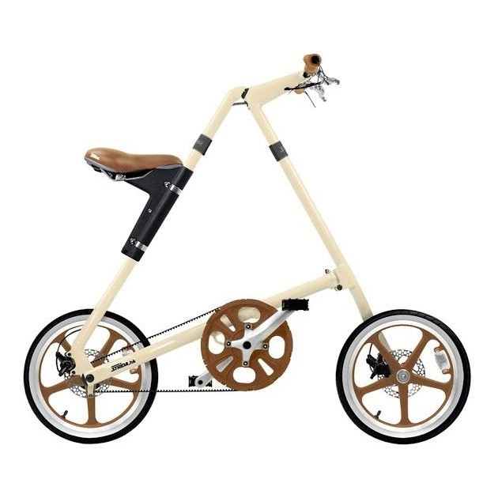

Strida
En STRiDA är inte lik någon annan cykel. Dess annorlunda utseende med triangulär ram är grunden till den unika metod att vikas upp och ihop på ca 7 sekunder. I hopfällt läge rullar man den framför sig på sina ordinarie hjul, alltså utan extra tillbehör, eller bär den i handtaget under sadeln vid behov. Drivningen är med kamrem och en 3-växlad modell finns att välja på, växlarna ligger direkt i vevhuset och inga extra vajrar behövs till styret. Bromsarna är skivbromsar på samtliga modeller. Normalvikt på en STRiDA är från ca 10 kg, beroende på utrustning.
6.500 kr